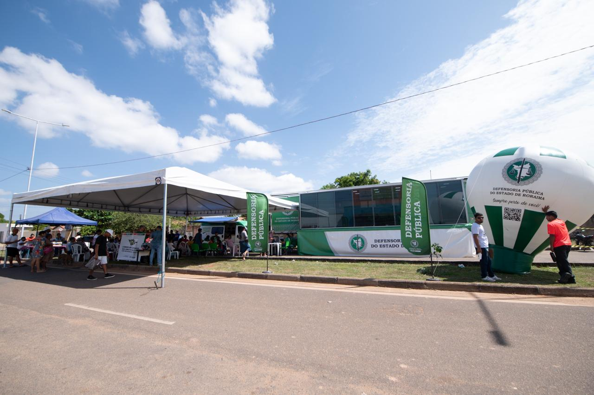

Rede de apoio
Informações sobre parceiros institucionais e comunitários envolvidos na ação.
A ação solidária dos 26 anos da Defensoria será divulgada neste espaço com foco em mobilização, parceiros e alcance social.
A Defensoria Solidária integra a programação dos 26 anos com uma proposta voltada ao apoio social e à articulação com parceiros institucionais e comunitários.
Os detalhes finais da ação ainda estão em preparação, mas a iniciativa já aponta para um trabalho baseado em escuta, participação e impacto direto na comunidade.
Assim que a agenda for confirmada, serão divulgadas aqui as informações sobre objetivos, cronograma, parceiros envolvidos e orientações de participação.
Mais informações serão publicadas em breve, com foco no alcance social da ação.

A Defensoria Solidaria nasce alinhada a uma vitoria institucional recorrente: transformar proximidade com a comunidade em acao organizada, util e humana.
Informações sobre parceiros institucionais e comunitários envolvidos na ação.
Chamadas públicas, orientações e formas de participação quando a agenda for divulgada.
Depois da execução, a ação pode deixar registros das entregas e do alcance social gerado.


